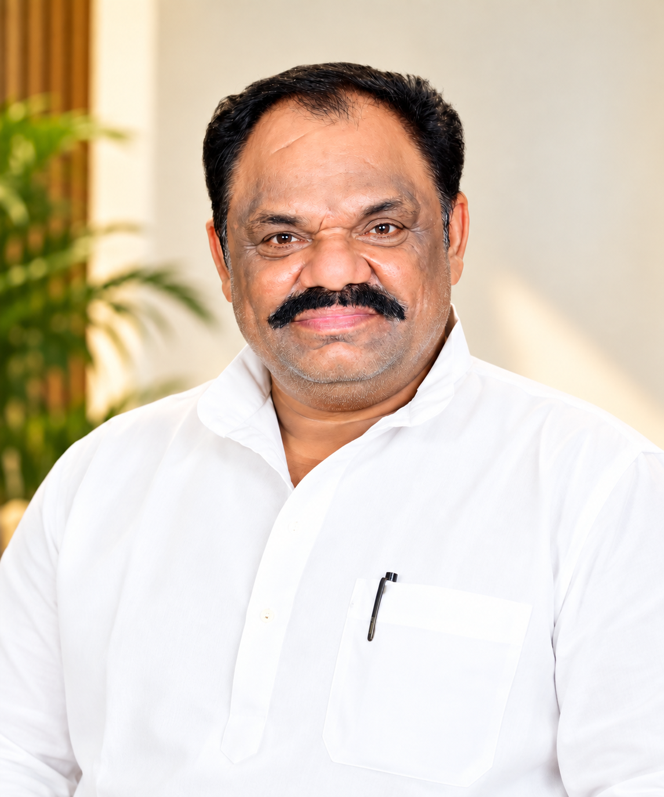

BUILDING ROOTED PATHWAYS FOR RURAL YOUTH
For generations across eastern Uttar Pradesh, rural families faced an agonizing dilemma: either send their children far away to expensive metropolitan centers, or watch their educational aspirations wither. In Kamruddinpur, Rampur, Jaunpur, we resolved to change that reality permanently.
Guided by the ethical ideals of Parmpujya Baba Gurupad Sambhav Ram Ji, we established Sarveshwaree Mahavidyalaya in 2010 to provide university undergraduate studies affiliated with Veer Bahadur Singh Purvanchal University. In 2016, recognizing that strong primary schools need disciplined, qualified local teachers, we introduced the D.El.Ed (BTC) pathway. In 2018, we built Sarveshwaree Private ITI with modern workshops to equip rural youth with certified industrial trades in Electrician and Fitter.
Throughout this journey, our founding philosophy remains uncompromised: zero capitation, zero hidden fees, and absolute transparency. As we now prepare emerging initiatives in paraveterinary and agricultural education, our promise to every family remains unchanged — disciplined education, authentic mentorship, and honest service.